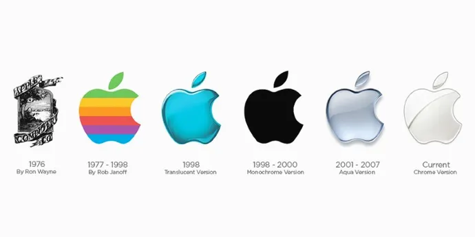

Apple Inc. je ameriško podjetje, ki proizvaja tablične in osebne računalnike z lastnim operacijskim sistemom, pametne telefone, mobilne predvajalnike glasbe in razne spletne storitve.
Apple so leta 1976 ustanovili Steve Jobs, Steve Wozniak in Ronald Wayne.
Leta 1977 so razvili mikroračunalnik Apple II, ki je postal zelo uspešen pri domačih uporabnikih, leta 1983 pa prvi komercialno uspešen osebni računalnik, ki je uporabljal grafični uporabniški vmesnik Apple Lisa, deloma navdihnjen z računalnikom Xerox Alto.
Leta 1984 so pri Applu predstavili računalnik Apple Macintosh (imenovan tudi Mac) s prvo uspešno komercialno uporabo grafičnega vmesnika.
Leta 1985 je Steve Wozniak zapustil Apple,medtem ko je Jobs odstopil, da bi ustanovil NeXT.Sedež podjetja je na Infinite Loop 1 v mestu Cupertino, Kalifornija.
Od leta 2021 je Apple četrti največji prodajalec osebnih računalnikov in četrti največji proizvajalec pametnih telefonov.Je eno izmed petih največjih ameriških podjetij za informacijsko tehnologijo.

Logotip jabolka je zagotovo eno najbolj znanih jabolk v zgodovini, takoj za Adamom in Evo, Sneguljčico in Newtonom. Iz slednjega izhaja tudi jabolko Steva Jobsa: na prvem logotipu Apple Computer iz leta 1976 je bil upodobljen Isaac Newton, ki je sedel pod jablano. Naslednje leto ga je zamenjalo tisto, kar danes poznamo kot ikono podjetja Apple: ugriznjeno jabolko. Ugriz bi lahko namigoval na izvirni greh Adama in Eve (kar kaže na željo po znanju, pa tudi na dejstvo, da so se Steve Jobs & Co. čutili kot "računalniški heretiki"). Po drugi teoriji gre za poklon Alanu Turingu, očetu računalništva, ki je v petdesetih letih prejšnjega stoletja naredil samomor tako, da je pojedel jabolko, polno cianida, potem ko je bil zaprt zaradi homoseksualnosti (takrat je homoseksualnost v Združenem kraljestvu veljala za kaznivo dejanje).griznjeno jabolko je bilo šestkrat spremenjeno z različnimi barvami.Najdlje je zdržala mavrična (čeprav so barve prikazane v napačnem vrstnem redu kot pri tradicionalni mavrici, vključno z LGTB): trajala je 21 let, od leta 1977 do 1998. .
Za izbrati element; klikni da dropdown: